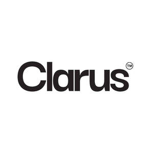

Trade Mark Journal No.2025/020 16 May 2025
UK00004195986 28 April 2025 (3,5,25,32)

- Class 3
- Skincare cosmetics; Cosmetic products in the form of aerosols for skincare; Organic cosmetics; Beauty serums; Beauty creams; Beauty lotions; Beauty care cosmetics; Beauty masks; Masks (Beauty -); Beauty soap; Beauty milk; Beauty gels; Beauty milks; Beauty creams for body care; Facial beauty masks; Beauty balm creams; Beauty preparations for the hair; Beauty care preparations; Distilled oils for beauty care; Beauty tonics for application to the face; Beauty masks for hands; Beauty serums with anti-ageing properties; Beauty tonics for application to the body; Natural cosmetics; Body cleaning and beauty care preparations; Non-medicated beauty preparations; Natural makeup; Natural perfumery; Body care cosmetics; Body and facial creams [cosmetics]; Hair cosmetics; Cosmetics; Skin care cosmetics; Colour cosmetics; Facial creams [cosmetics]; Colour cosmetics for the skin; Hair care creams [for cosmetic use]; Anti-aging moisturizers used as cosmetics; Colour cosmetics for the eyes; Body creams [cosmetics]; Cosmetics for eye-lashes; Natural oils for cosmetic purposes; Hair care lotions [for cosmetic use]; Facial makeup; Cosmetics for suntanning; Cosmetic products in the form of aerosols for skin care; Eye cosmetics; Skin masks [cosmetics]; Hydrolyzed collagen for cosmetic purposes; Skin hydrators being injectable dermal fillers; Collagen preparations for cosmetic application; Collagen for cosmetic purposes; Anti-ageing serum; Collagen preparations for cosmetic purposes; Skin hydrators; Non-medicated skin serums; Tissues impregnated with a skin cleanser; Skin moisturizers; Skin emollients; Cosmetic oils for the epidermis; Skin moisturizer; Anti-aging moisturizers; Moisturizing preparations for the skin; Cosmetics containing keratin; Skin moisturizers used as cosmetics; Cosmetics containing hyaluronic acid; Procollagen for cosmetic purposes; Skin texturizers; Skin moisturisers; Creams for firming the skin; Skin moisturiser; Skin relief serum [cosmetic]; Skin emollients [non-medicated]; Skin calming serum; Skin cream; Skin recovery creams [cosmetics]; Skin lighteners; Oils for the skin; Skin creams; Creams for the skin; Skin moisturizer masks; Cream for whitening the skin; Whitening the skin (Cream for -); Pro-collagen for cosmetic purposes; Anti-aging serum for cosmetic use; Cosmetic skin enhancers; Moisturising skin creams [cosmetic]; Cosmetic preparations for skin firming; Anti-ageing moisturiser; Tissues impregnated with cosmetics; Smoothing emulsions for the skin; Skin toners; Skin toner; Anti-aging cream; Skin whitening creams; Creams (Skin whitening -); Non-medicated skin creams; Skin creams [non-medicated]; Skin cream [for cosmetic use]; Cosmetics for use in the treatment of wrinkled skin; Anti-aging creams; Anti-ageing creams; Body and facial gels [cosmetics]; Non-medicated stimulating lotions for the skin; Anti-wrinkle creams; Skin toners [cosmetic]; Skin creams [cosmetic]; Cosmetic creams for the skin; Skin creams [for cosmetic use]; Skin tonics [non-medicated]; Moisturising skin lotions [cosmetic].
- Class 5
- Food supplements; Dietary food supplements; Medicated food supplements; Vitamin and mineral food supplements; Food supplements for dietetic use; Anti-oxidant food supplements; Health food supplements made principally of vitamins; Food supplements for medical purposes; Vitamin preparations in the nature of food supplements; Food supplements for sportsmen; Deodorants for clothing; Health food supplements made principally of minerals; Deodorants for clothing and textiles; Clothing (Deodorants for -) and textiles; Textiles (Deodorants for clothing and -); Food supplements for non-medical purposes; Pharmaceutical preparations for animal skincare; Pharmaceutical products for skin care for animals; Collagen for medical purposes; Injectable dermal fillers; Injectable dermal filler; Protein supplements; Vitamin and mineral supplements; Vitamin and mineral preparations; Protein powder dietary supplements; Alginate dietary supplements; Pharmaceutical products and preparations for hydrating the skin during pregnancy; Albumin dietary supplements; Liquid vitamin supplements; Pharmaceutical preparations for hydrating the skin during pregnancy; Anti-oxidant supplements; Vitamin supplements for use in renal dialysis; Protein dietary supplements; Processed human donor skin for the replacement of soft tissue; Skin relief serum [medicated]; Soy protein dietary supplements; Electrolyte drinks for medical purposes; Electrolyte replacement beverages for medical purposes; Dietary supplements promoting fitness and endurance; Fitness and endurance supplements; Dietetic foods for use in clinical nutrition; Vitamin supplements; Dietary supplements; Nutritional supplements; Herbal supplements; Probiotic supplements; Chlorella dietary supplements; Flaxseed dietary supplements; Calcium supplements; Dietary supplements consisting of vitamins; Prebiotic supplements; Lecithin dietary supplements; Mineral dietary supplements; Zinc dietary supplements; Mineral nutritional supplements; Acai powder dietary supplements; Propolis dietary supplements; Dietary and nutritional supplements; Liquid dietary supplements; Nutraceuticals for use as a dietary supplement; Linseed dietary supplements; Liquid nutritional supplements; Yeast dietary supplements; Casein dietary supplements; Enzyme dietary supplements; Flaxseed oil dietary supplements; Liquid herbal supplements; Wheat dietary supplements; Dietary supplements for humans; Dietary supplements for infants; Pollen dietary supplements; Glucose dietary supplements; Dietary supplements in powder form; Dietary supplements with a cosmetic effect; Dietary supplements for medical use; Mineral dietary supplements for humans; Whey protein dietary supplements; Nutritional supplements consisting primarily of magnesium; Dietary supplements consisting primarily of magnesium; Vitamin supplement patches; Health-aid foods supplements containing ginseng; Soy isoflavone dietary supplements; Dietary supplement drinks; Linseed oil dietary supplements; Dietary supplements and dietetic preparations; Nutritional supplements consisting of fungal extracts; Folic acid dietary supplements; Nutritional supplements consisting primarily of calcium; Dietary supplements consisting primarily of calcium; Calcium tablets as a food supplement; Nutritional supplements consisting primarily of zinc; Dietary supplements for controlling cholesterol; Nutritional supplements consisting primarily of iron; Herbal dietary supplements for persons special dietary requirements; Dietary supplements and dietetic preparations containing CBD oil; Dietary supplements consisting primarily of iron; Nutritional supplement energy bars; Dietary supplement drink mixes; Multivitamins; Dietary food supplements used for modified fasting; Zinc supplement lozenges; Food supplements in liquid form; Protein supplement shakes; Pine pollen dietary supplements; Health food supplements for persons with special dietary requirements; Dietary supplements for humans not for medical purposes; Food supplements consisting of amino acids; Nutritional supplement meal replacement bars for boosting energy; Powdered nutritional supplement drink mix; Dietary supplements for human beings; Vitamins and vitamin preparations; Preparations for supplementing the body with essential vitamins and microelements; Health-aid foods supplement containing red ginseng; Multi-vitamin preparations; Food supplements consisting of trace elements; Powdered nutritional supplement energy drink mix; Powdered fruit-flavored dietary supplement drink mix; Delivery agents in the form of coatings for tablets that facilitate the delivery of nutritional supplements; Preparations of vitamins; Antioxidant pills; Dietary supplemental drinks; Multivitamin preparations; Vitamin tablets.
- Class 25
- Clothing; Clothing for sports.
- Class 32
- Sports drinks containing electrolytes; Non-alcoholic drinks enriched with vitamins and mineral salts; Isotonic beverages; Drinking water with vitamins; Isotonic drinks; Mineral water [beverages]; Energy drinks containing caffeine; Carbohydrate drinks; Powders used in the preparation of coconut water drinks; Isotonic non-alcoholic drinks; Beverages containing vitamins.
OriginWell Ltd